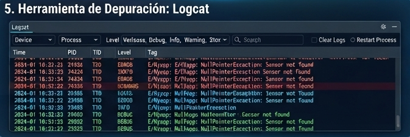

7. Depuración y Seguridad en Aplicaciones Móviles
¿Qué es la Depuración y la Seguridad?
- Depuración (Debugging): Proceso metódico de inspección, localización y corrección de errores lógicos, excepciones y fallos de rendimiento en el código fuente.
- Seguridad Móvil: Conjunto de prácticas y mecanismos de protección orientados a blindar la aplicación frente a vulnerabilidades, ingeniería inversa, robo de datos y ataques de red (MITM).
Herramientas de Depuración Incluidas en el Entorno de Desarrollo Móvil
- Logcat (Android Studio): Consola de registro en tiempo real para rastrear mensajes de depuración, errores y excepciones (Crashlytics).
- Debugger Interactivo: Puntos de interrupción (Breakpoints), inspección de variables en memoria y ejecución paso a paso.
- Profiler (CPU, Memoria, Red): Herramientas gráficas para monitorear el consumo de recursos en tiempo real y detectar fugas de memoria (Memory Leaks).
- Xcode Instruments (iOS): Suite avanzada de diagnóstico y análisis de rendimiento para dispositivos Apple.

Video Explicativo Recomendado
Profundiza en los conceptos clave de este tema a través de nuestra selección audiovisual en YouTube.
▶ Ver video explicativo en YouTube